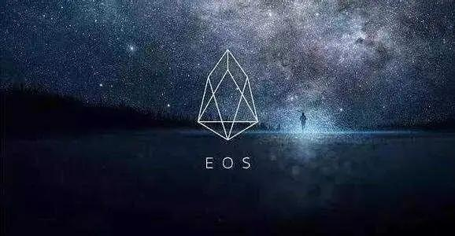

与去年EOS的超级节点相比，如今火爆全球的Pi币明年将开启的个人分布式节点有合特点呢？ 大家可能都知道Pi白皮书阐述了4种用户角色，先锋、贡献者、大使、节点，角色代表的是参与度和投入程度。
凡是注册Pi并开启挖矿状态的都是先锋用户，手机号验证并激活安全圈的是贡献者，成为贡献者后大量成功邀请者是大使，使用电脑软件运行来进行挖矿的则是节点。 角色还有一个非常重要的含义：算力。 正常情况下，算力排序： 先锋＜贡献者＜大使＜节点。 目前，可能有一部分人已经进入第三种角色，即“大使”角色，只需要你激活安全圈并大量邀请即可。唯独第四种还没有，Pi官方也说节点即将开启，很多人可能都能理解前三种角色的含义，但不太明白这个节点是怎么回事，比如如何建立节点、建立节点有什么好处、建立节点意味着什么之类的。 OnePi白话科普时间，Pi Nodes（Pi 节点）。在我们说Pi之前，我们先说一下另外一个节点代表：EOS。 开创超级节点先河:EOS

2018年币圈节点最著名的非EOS莫属，EOS是被号称是ETH的最强劲对手，EOS超级节点是怎么回事呢？ EOS采用的DPOS共识机制，简单点说，就是大家一起用手里的EOS Token来给所有节点竞选人投票，谁的票数多，谁就可以当选主节点。EOS白皮书中提到，EOS的每年会增发代币的5%给维持节点的人。这笔钱什么概念呢？EOS总量十亿，5%也就是五千万；EOS现价约合38RMB，主网上线后若按40RMB来算（2018年计算），分给21个节点，每个节点每年仍有接近1亿的收益。目前EOS价格是21元（2019年10月6日 火币报价）。 你可以再简单理解，EOS节点可以分到更多的EOS，如果用互联网名词说法就是牵线众筹，大伙儿将自己的EOS投到节点，等节点获得的EOS再返给参与者，坐等分红。 超级节点=众筹分币 EOS依靠的是强大共识，除了BTC社区之外，可能整个币圈社区最好的共识社区就属EOS引力区。（不过官网好像乱码了。）
为什么要建立节点？建立节点有什么影响？
1、节点建立后可以获得更多的币，就是收益；
2、节点具有很多的话语权，尤其是参与到项目生态发展等；
3、节点需要投币，就是间接锁仓，那么市场上流通的币就减少了，反而会太高币价。
个人分布式节点开创者：Pi币
你已经知道了节点可以赚取更多的币，但是问题在于需要更多的投入，比如设备或者大量的代币，很多人是玩不起的，所以由于社区节点的存在，跟着别人玩，然而你是否隐约感觉好像还不完全是自己或者感觉EOS不在我自己的手里，说不好听的，万一社区节点跑路了呢？ 近日，有个别社区打着Pi节点的名义收取社群成员的USDT，已经有很多人问奇哥我这是真是假，我只想说Pi官方还未公布Node详情。 但是Pi节点和EOS节点是完全不一样的，EOS节点被称之为超级节点，是因为当时全球100多个社区节点或者大V节点参与竞争，竞选21个节点名额，那么比较的就是社区节点投票（EOS代币）数量。 Pi呢？我们仔细看一下Pi白皮书。
安全圈的真实含义 安全圈，大家理解的是3-5个人的小圈子，然后可以提高你的算力，仅仅如此吗？ 并不完全是，提高算力只是其中一个功能，通过彼此信任而提高算力（信任度），为什么5个人就够了？如果我的安全圈加满了100个人会怎么样？
1、算力提高。算力底数在5个人后就达到顶峰100%了，再多加算力不会增加。
2、利益关系。安全圈内的人和你只有两种关系，邀请关系和非邀请关系，邀请关系的安全圈成员和你有利益关系（算力互加捆绑，也可称之为“算力朋友”，现实世界里你可能认识他也可能不认识他，未必是亲友关系。），而没有邀请关系的则不是利益关系。
3、决策投票。如果以后交易或者决策，那么你的安全圈内的成员要投票或者验证，他为什么要给你验证？可能人员越多，投票越复杂。如果是非邀请关系的，那么成员未必会投票通过某项决策或者某个交易，所以说安全圈3-5个人是合适的，人数相对较少，那么决策容易通过。
4、信任捆绑。既然5人都属于一个安全圈，奇哥认为那么就是说你们是彼此信任的，你们是一个小团队，如果某个人作恶或者不正当交易，那么团队其他成员可以反对，投票决定（可能匿名方式）。问题来了，如果这种不正当交易，投票通过了，那么你这个安全圈可能就是危险的或者有不良记录的安全圈，如果因此受到惩罚（比如限制此安全圈的交易数额、提示其他安全圈有风险等），那么就意味着整个安全圈团队都受到惩罚，那个投反对票的同样惩罚。所以呢，这种安全圈机制是一种信任捆绑的好方式，Pi首创此法。所以建议大家安全圈最好是添加具有邀请关系的人。
5、团队群聊。安全圈数量，既然3-5个就足够了，但是很多人都加了好几十个，Pi官方在测试团队群聊功能，是不是就是说安全圈内成员或者邀请关系成员进入一个群聊，每个人都有下级，那么这得建立多少团队群聊频道？有多少用户就得建立多少团队群聊频道，这显然不现实，所以针对团队群聊频道，最好是安全圈内的成员，所以每个人最多5个团队群聊频道。具体到底是怎样的，还需要看Pi官方如何解决这个问题，相信会有更好的方式。
Pi更远大的目标 Pi节点带有安全圈信任机制，那么就是说每个人都可以建立安全圈，每个人都可以建立自己的节点，每个人都是节点主人，这就是分布式节点，和EOS社区超级节点完全不同。 Pi节点是构成Pi netwrok（Pi网络）的骨架关节，只有足够多的独立节点才能构成一个庞大的Pi网络，正是通过这种挖矿的方式，让币不会集中在某几个人手里，尽可能分布到普通用户，按照之前的说法，1000万用户Pi挖矿暂停，那么很可能有500-1000万个节点，这在整个币圈都是绝无仅有的。 每一个节点都是一个小生态圈，这几百万个小生态圈共同构成了整个Pi生态系统，只有这些骨架足够多，才能够撑起整个Pi网络内的吞吐量，而这些小节点越多，整个系统就越庞大越流畅，到那时，Pi可能难以想象的大，无法想象的大！ 而你我，就是这Pi网络系统中的一个个独立小节点，整个系统中的骨架，整个系统的一部分，每一个Pi都是节点，整个世界就变成了一个超级大节点，才真正实现了One Pi One World。